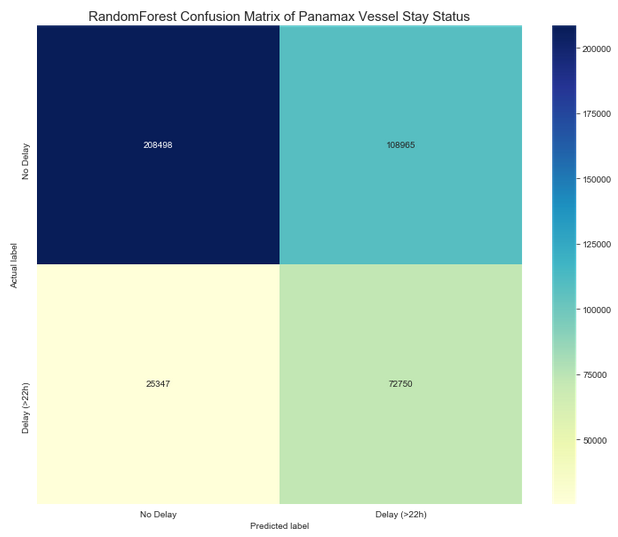
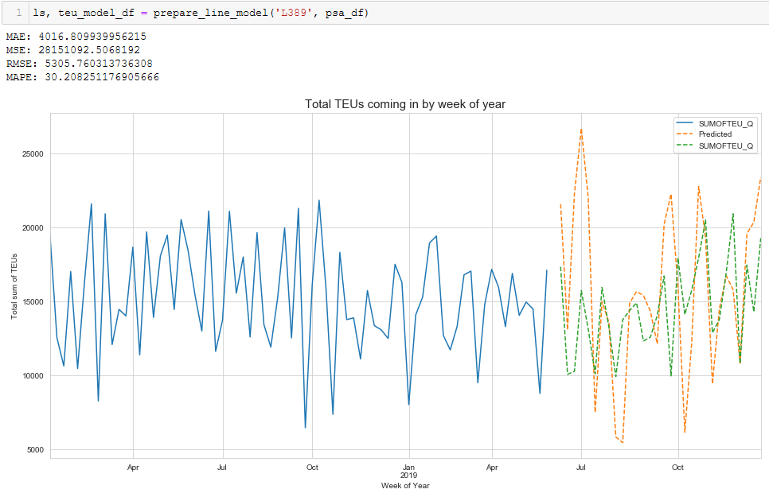
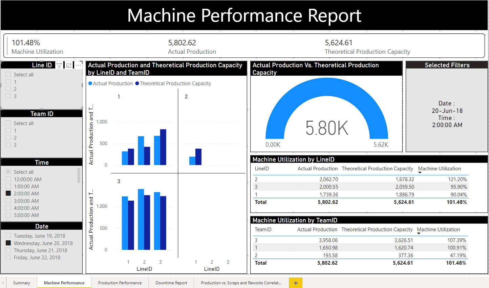

Hello, I'm
Evan Quek
Data Analyst & Futures Trader
BCG RISE Graduate • Singapore

Hello, I'm
Data Analyst & Futures Trader
BCG RISE Graduate • Singapore
I am a technical analyst trader with approximately five years of progressive experience in futures markets, specialising in trading system development, analysis of trading results, and live trade execution on PATS and CQG platforms.
My journey into data science began through the BCG RISE Business and Data Analytics Program, which I completed with Distinction. The program ignited a deep passion for Python and machine learning, and I am now actively applying these skills to solve real-world problems — with a particular interest in wildlife conservation and financial markets.
I believe that the intersection of domain expertise in trading and rigorous data analytics creates a powerful edge — whether in predicting market movements or uncovering patterns in complex datasets.

Random Forest, Lasso Regression, RAG models, classification & time-series forecasting
Pandas, NumPy, Scikit-learn, Matplotlib, Seaborn, Flask, Jupyter Notebooks
Microsoft PowerBI, Matplotlib, Seaborn — dashboards and interactive reports
Technical analysis, trading system development, PATS & CQG platforms, COT report analysis
Retrieval-Augmented Generation (RAG), GPT-based chatbots, LLM tool development
AWS deployment, RAG app hosting, TypeScript web applications

A Harvard Final Project that automates the extraction, analysis, and visualisation of Commitment of Traders (COT) reports published by the CFTC. The tool provides futures traders with actionable intelligence through trend identification, sentiment analysis, and momentum indicators — powered by a Retrieval-Augmented Generation (RAG) model.

Applied a Random Forest classifier to predict vessels likely to experience dwell time delays at port. The model assists port operators in resource planning, enabling proactive allocation of cranes and manpower to reduce congestion and improve vessel turnaround time.

Built a Lasso regression model to forecast incoming container volumes (TEUs) on a weekly basis. When actual volumes fall short of predictions, it signals potential congestion the following week, enabling pre-emptive operational decisions to maintain port efficiency.

Designed and built an interactive PowerBI dashboard for a car seat manufacturer to monitor production KPIs in real time. The dashboard tracks machine utilisation, actual vs. theoretical production capacity, and downtime — enabling data-driven operational decisions across production lines.
Business and Data Analytics — Awarded for outstanding capstone project performance
View Badge →Awarded Distinction for the BCG RISE Hackathon Project
View Badge →Awarded Distinction for the Churn Prediction machine learning project
View Badge →Ranked in the top 2 for the PowerBI dashboard project in the cohort
View Badge →BCG RISE Business and Data Analytics Program — Full program completion with Distinction recognition
View Certificate →I am open to opportunities in data analytics, machine learning, and quantitative finance. Feel free to reach out via any of the channels below.